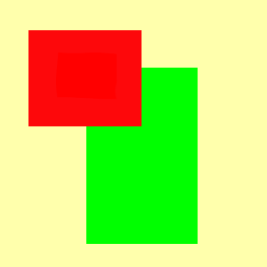
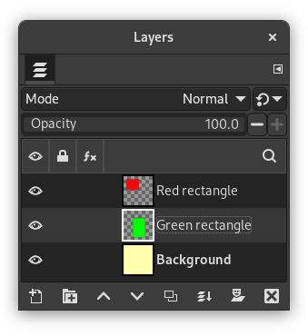
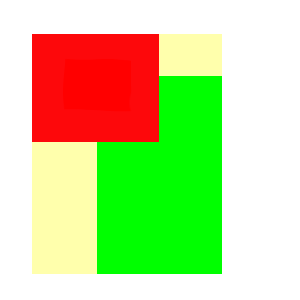
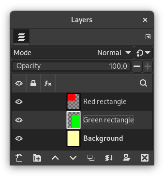

You can crop image in two ways:
-
Cortar para a seleção
-
Crop to content
The command crops the image to the boundary of the selection by removing any strips at the edges whose contents are all completely unselected. Areas which are partially selected (for example, by feathering) are not cropped. If the selection has been feathered, cropping is performed on the external limit of the feathered area. If there is no selection for the image, the menu entry is disabled.
![[Nota]](images/note.png)
|
Nota |
|---|---|
|
This command crops all of the image layers. To crop the active layer only, use the Crop to selection command from the Layer menu. |
You can access this command from the main menu through → .
The command removes the borders from an image. It searches the layers for the largest possible border area that is all the same color, and then crops this area from the image, as if you had used the Crop tool.
Figura 16.67. “Crop to content” example

Original image.

This image is made of three layers. One with a red rectangle, another with a green rectangle, and a yellow background. The green layer is active.

Resulting image.

“Crop to content” has cropped the image to the outer borders of the green and red layers. Only the part of the yellow layer inside the red-green area has been kept.
You can access this command from the main menu through → .